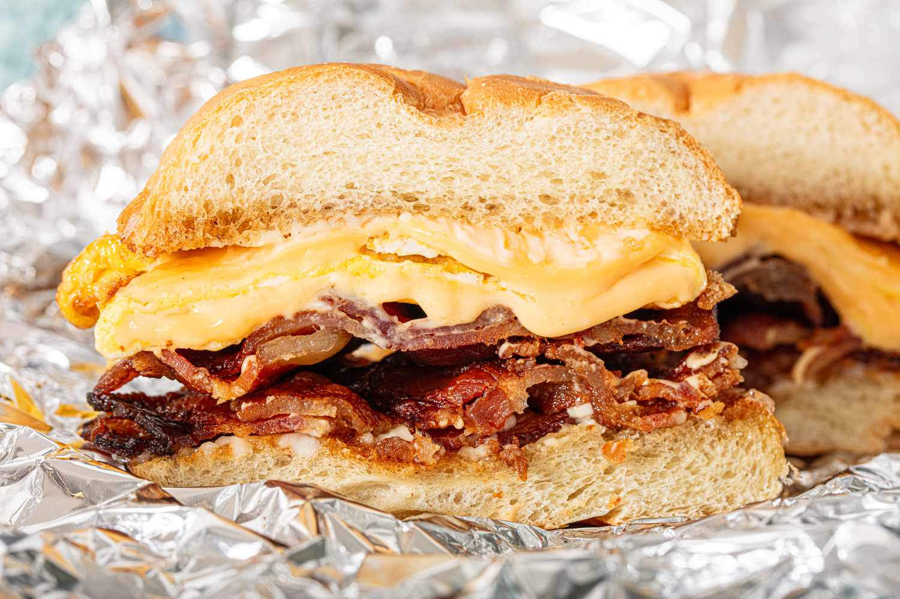

Here is my Breakfast Recipe
Let me tell you how I like to my breakfast bacon egg and cheese sandwich
- Take two slices of multigrain bread and toast it on the setting: 2.
- Take out your pan and set the heat to medium for 2 minutes.
- Place 3 pieces of bacon directly on the pan without oil.
- After cooking each side for 2 minutes, place the bacon on your toast.
- Put half a spoon of butter on the pan and crack two eggs.
- Flip the eggs after 2 minutes and gently polk the yolk. This creates the perfect mixture of wet to dry yolk.
- After cooking for another minute, place the eggs on top of the bacon.
- Turn the heat to medium-low and place one slice of provolone on it.
- Move the provlone around and take it out of the pan depending on how melty you like your cheese.
- Once your cheese is on your sandwich, place the top slice of toast on top, and congratulations, you just made my famous bacon egg and cheese sandwich!